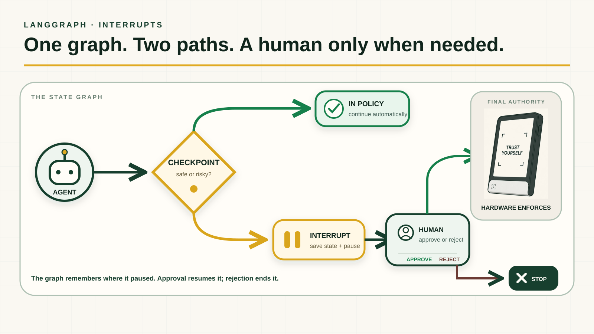
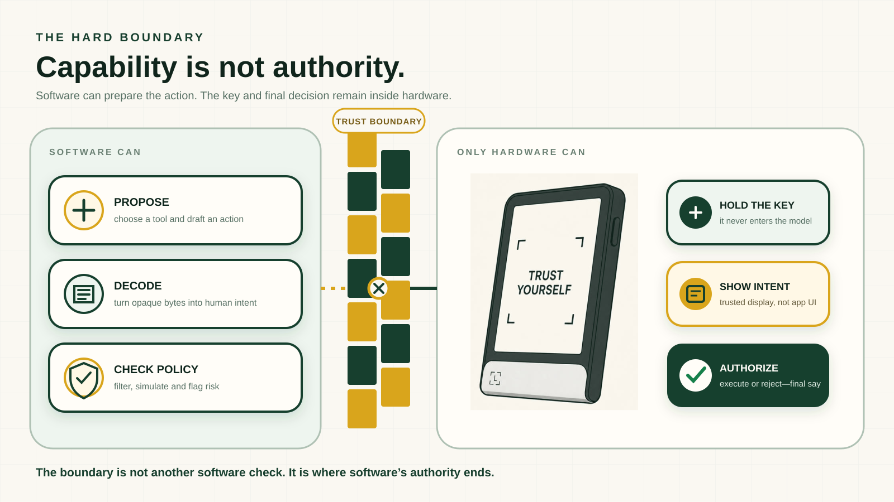

یه ایجنت واقعی همیشه از نقطهٔ A صاف نمیره به B. ممکنه بین چندتا ابزار بچرخه، وسط کار قطع بشه، نتیجهٔ مرحلهٔ قبلی رو لازم داشته باشه یا برای یه تصمیم حساس منتظر تأیید بمونه. LangGraph نقشه و حافظهٔ این مسیره؛ نه مغز مدله، نه اجازهٔ نهایی اجرا.
LangGraph دقیقاً چیه؟
اگه بخوام خیلی ساده بگم، LangGraph یه ابزار برای ساختن مسیر کار ایجنتهای چندمرحلهایه. کار رو به شکل یه نقشه میچینی: هر بخش یه وظیفه داره، مسیر میتونه دوشاخه بشه و ایجنت هم یادش میمونه تا کجای کار رفته.
توی داکیومنتها بهش میگن runtime و framework سطحپایین برای workflowهای stateful. فعلاً درگیر این اسمها نشو؛ مهم اینه که میتونی دقیق مشخص کنی ایجنت کجا بره جلو، کجا برگرده و کجا وایسه.
فرض کن توی یه بازی چندتا مسیر داری. مسیر بیخطره؟ برو جلو. رسیدی به یه مرحلهٔ حساس؟ بازی وایمیسته و از یه آدم میپرسه. برق هم قطع بشه، لازم نیست از اول شروع کنی. LangGraph تقریباً همین کار رو برای ایجنت انجام میده.
شش تا کلمه که کارت رو راه میندازه
دفترچهٔ ایجنت
پیامها، جواب ابزارها و تصمیمهایی که تا اینجا گرفته رو توش نگه میداره.
یه مرحله از کار
مثلاً سرچکردن، حسابکردن، صداکردن یه ابزار یا نوشتن جواب.
مسیر مرحلهٔ بعد
میگه بعد از این مرحله کجا برو؛ بعضی وقتها هم با توجه به شرایط مسیر رو عوض میکنه.
دکمهٔ سیو
جای فعلی کار رو ذخیره میکنه تا اگه چیزی قطع شد، از همونجا ادامه بدی.
یه مکث حسابشده
ایجنت رو عمداً نگه میداره تا یه آدم یا سیستم مجاز جواب بده.
ادامه از همونجا
بعد از تأیید، لازم نیست همهچی دوباره اجرا بشه؛ کار از همون نقطه ادامه پیدا میکنه.
تأیید آدم وسط کار چطوریه؟
قرار نیست ایجنت برای هر حرکت کوچیکی ازت اجازه بگیره؛ اینطوری فقط یه سیستم اعصابخردکن ساختی. قبل از یه کار حساس، گراف وضعیت فعلی رو سیو میکنه و ایجنت رو نگه میداره. بعد یه آدم تصمیم میگیره: ادامه بده یا همینجا تمومش کن.
کارهای عادی که توی محدودهٔ مجازن، از مسیر سبز رد میشن. کار پرریسک میره روی مسیر زرد، مکث میکنه و منتظر بررسی میمونه.

Human-in-the-loop یعنی آدم فقط جایی وارد کار بشه که واقعاً به قضاوتش نیاز داریم؛ نه اینکه برای هر قدم یه دکمهٔ تأیید بزنیم.
سه تا مثال که قضیه رو روشن میکنه
مبلغ زیر ۳۰ دلاره و همهچی عادیه؟ خودش انجام بده. مبلغ بیشتره یا یه چیزی مشکوکه؟ وایسا تا یه نفر نگاه کنه.
سرچ و پیشنویس رو خودش انجام بده؛ ولی اگه یه ادعای حساس داشت، قبل از انتشار بفرستش برای بررسی.
ایجنت میگه این swap رو انجام بدیم. گراف میتونه قبلش مکث کنه، ولی کلید و اجازهٔ آخر نباید دست نرمافزار باشه.
ولی یه مکث نرمافزاری هنوز «مرز سخت» نیست
LangGraph میتونه کار رو نگه داره، اطلاعات رو قابلفهم کنه و چک کنه که با قانونهای نرمافزار جور درمیاد یا نه. همهٔ اینا لازمن، ولی هنوز دارن توی همون محیط نرمافزاری اجرا میشن.
اگه خود مدل یا اپ به کلید دسترسی داشته باشه، یه باگ یا پرامپت خراب ممکنه همهٔ این چکها رو دور بزنه. پس نرمافزار باید کار رو آماده کنه؛ نه اینکه اختیار آخر رو هم دستش بگیریم.

ایجنت پیشنهاد میده. LangGraph مسیر رو میچینه و اگه لازم باشه نگهش میداره. آدم نظارت میکنه. سختافزار حرف آخر رو میزنه.
اصلاً کی به LangGraph نیاز داری؟
احتمالاً به دردت میخوره اگه…
- کارت چند مرحله و چندتا مسیر داره
- ممکنه ساعتها طول بکشه
- بعد از خرابشدن باید از همونجا ادامه بدی
- وسط کار به تأیید آدم نیاز داری
احتمالاً الکی پیچیدهش میکنی اگه…
- فقط یه پرامپت میفرستی و یه جواب میگیری
- یه ابزار ساده فقط یه بار اجرا میشه
- حافظه و ادامهدادن برات مهم نیست
- هیچ مسیر دوشاخه یا تأییدی نداری
چه جور تیمهایی ازش استفاده میکنن؟
تیمهایی که دستیار پشتیبانی، ایجنت تحقیق، گردش کار اسناد، اتوماسیونهای طولانی یا اپهای حساس میسازن. خود LangChain هم ایجنتهای آمادهش رو روی LangGraph اجرا میکنه، چون وقتی کار جدیتر میشه، ادامهدادن بعد از قطعشدن، دیدن روند اجرا و آوردن آدم وسط تصمیم مهم میشن.